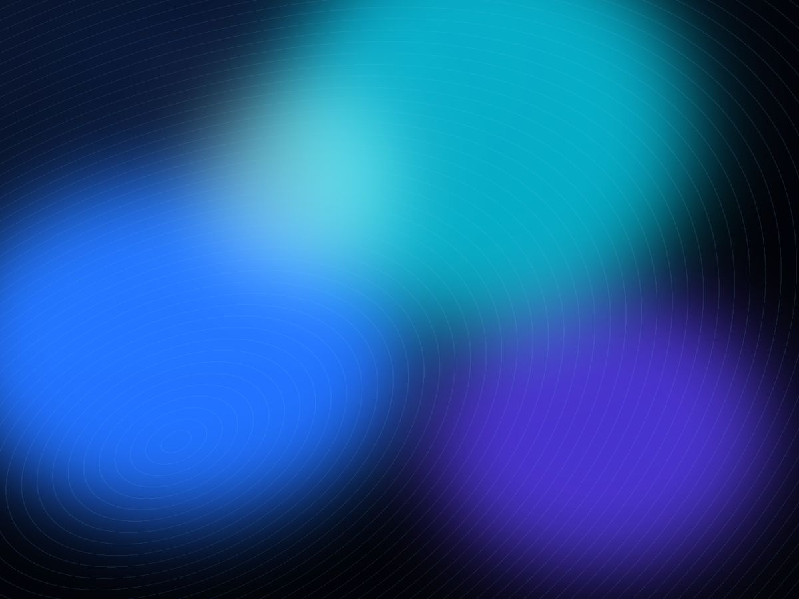
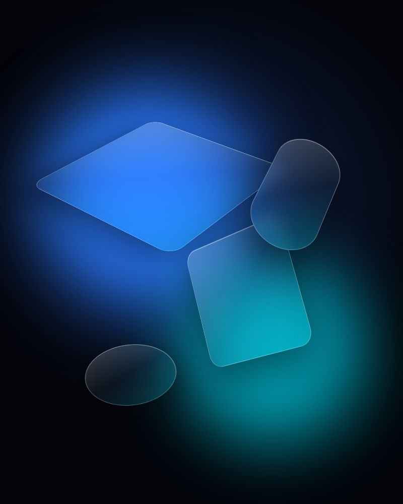
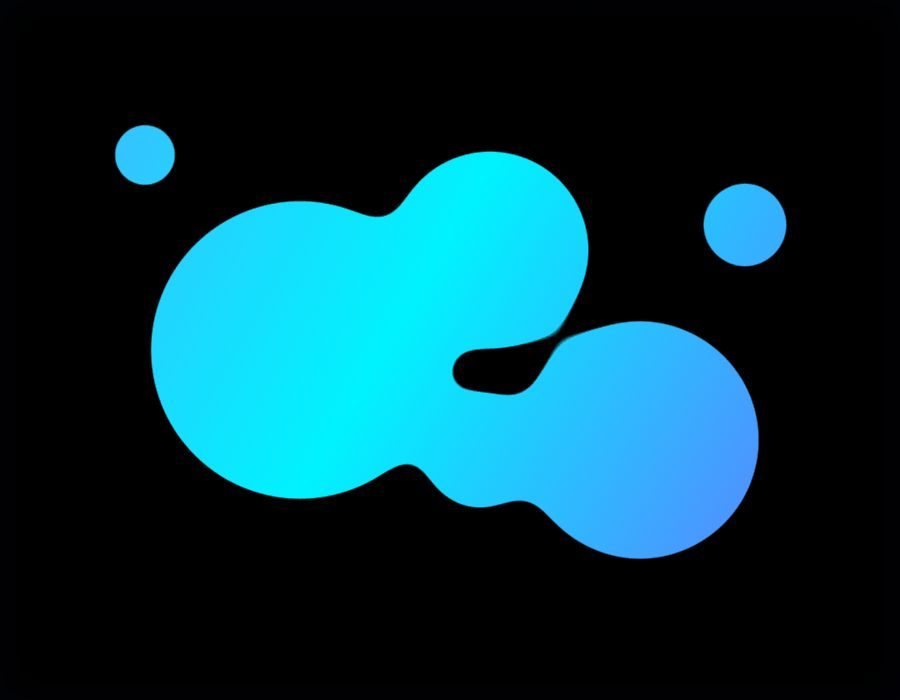
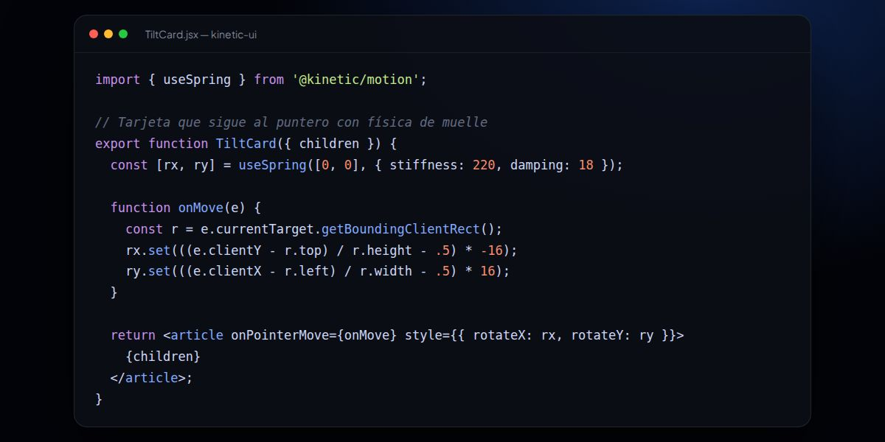
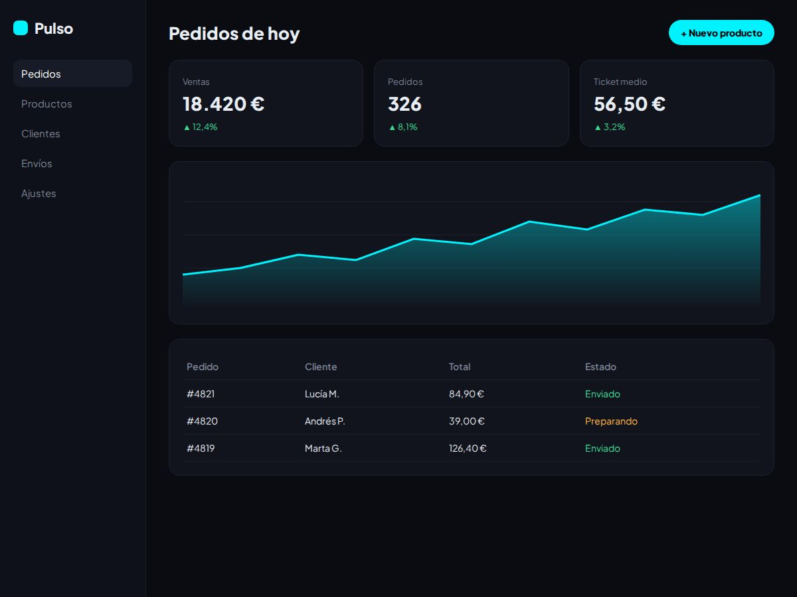
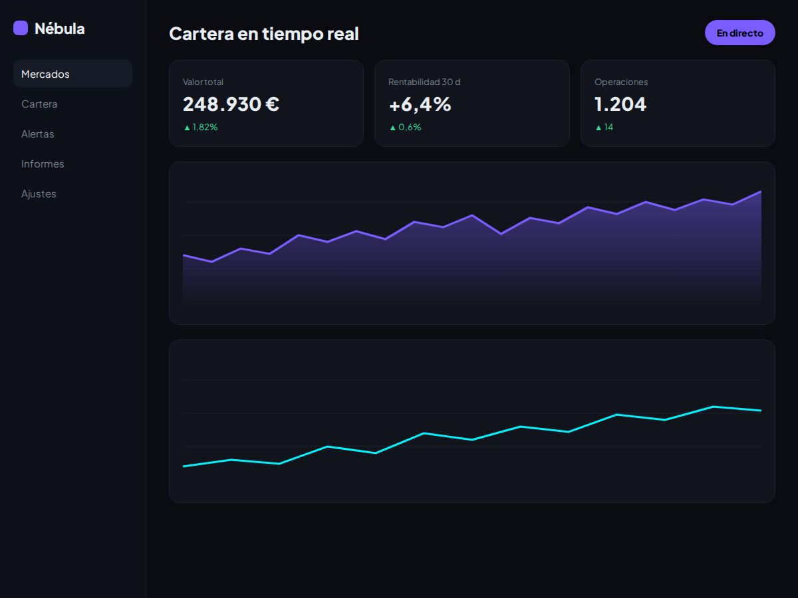
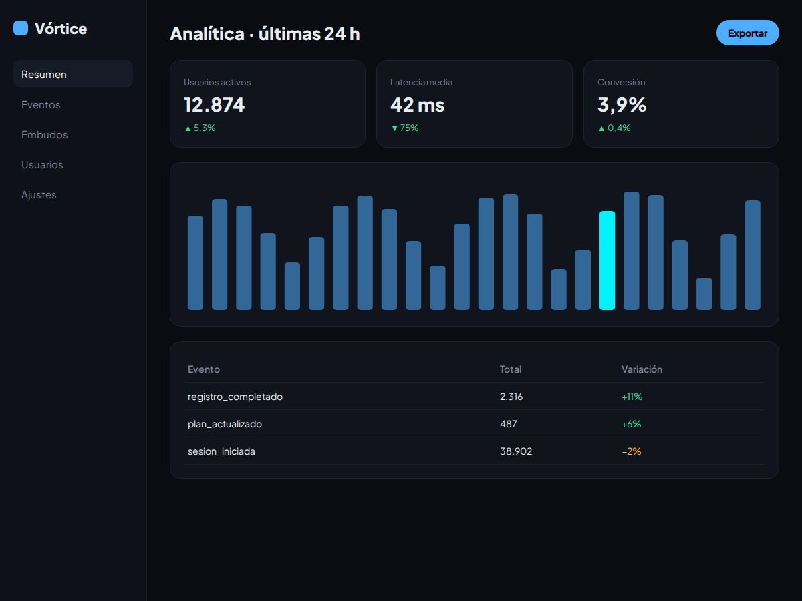
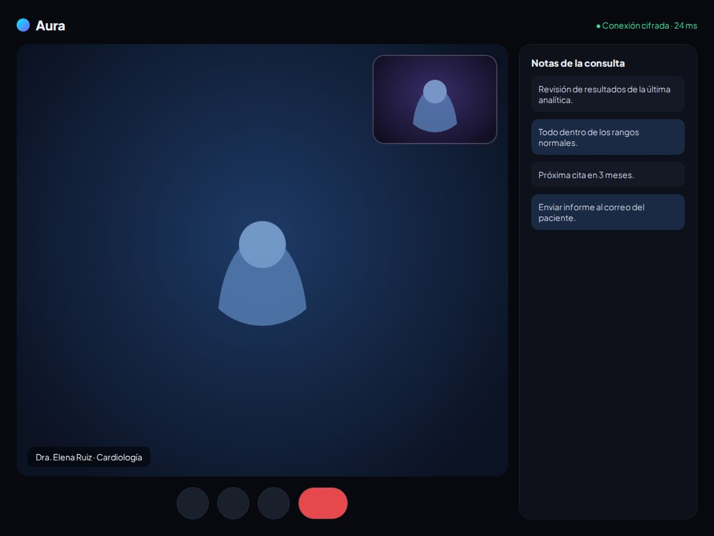

Aceleración por GPU
Rendimiento sin compromisos
Animaciones basadas en transformaciones compuestas que garantizan un scroll suave y libre de lag.
El futuro del desarrollo web ya está aquí
Interfaces ultra-reactivas con animaciones fluidas a 120 Hz que transforman código estático en narrativa interactiva premium.
Cada detalle responde al usuario en tiempo real, construido sobre primitivas CSS y JS de alto rendimiento.

Aceleración por GPU
Animaciones basadas en transformaciones compuestas que garantizan un scroll suave y libre de lag.

UX Orgánica
Transiciones que emulan el movimiento de materiales del mundo real.

Interactividad
Maquetación fluida que se adapta a cualquier pantalla.

Futuro
Profundidad espacial simulada mediante variables CSS reactivas al puntero.
De paneles financieros a plataformas SaaS: sistemas en producción usados por miles de personas cada día.

Commerce
Rediseñamos el checkout completo reduciendo el abandono de carrito en un 31% y llevamos el tiempo de carga inicial por debajo de 1,2 segundos en conexiones móviles.

Fintech
Construimos un motor de visualización en tiempo real capaz de renderizar más de 40.000 puntos de datos por segundo sin bloquear el hilo principal.

SaaS
Migramos una arquitectura monolítica a microservicios, reduciendo la latencia de consultas en un 75% y habilitando escalado horizontal automático.

Healthtech
Diseñamos salas de consulta en 3D de baja latencia, cumpliendo estándares de accesibilidad AA y protegiendo datos sensibles con cifrado de extremo a extremo.
Sensibilidad, estructura y dirección: tres disciplinas que convergen en cada lanzamiento.
Sensibilidad
Estructura
Dirección
Años iterando sobre una idea simple: el rendimiento y la belleza no son negociables.
Estudio Interno 01
No repetimos fórmulas. Diseñamos algoritmos visuales adaptativos. Cada píxel responde a la física del entorno del usuario para crear una simbiosis digital perfecta.
Explorar el ManifiestoCuéntanos qué quieres construir. Respondemos en menos de 48 horas con una primera propuesta de alcance y plazos.